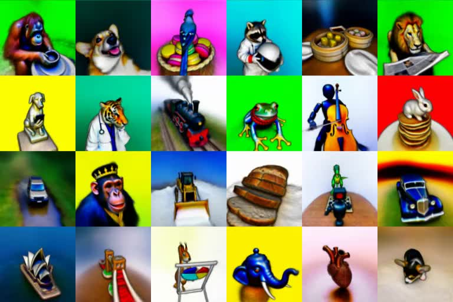
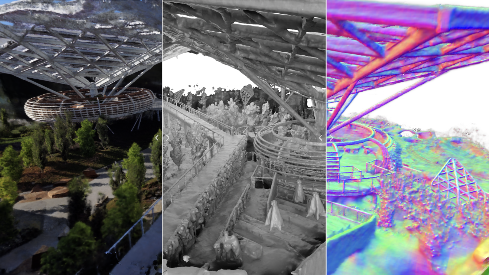

|  |  |
| DreamFusion: Text-to-3d using 2D
diffusion ICLR, 2023 |
Neuralangelo: High-Fidelity Neural Surface Reconstruction CVPR, 2023 |
Just as you wouldn’t read a website or newspaper in the same way that you would read a novel, there are both efficient and inefficient ways to read academic papers. Learning to read a new kind of material is hard work, and you should try to adapt your reading style to accommodate the characteristics of the medium. It might take some time to find a reading style or method which works best for the individual, but some general guidelines are broadly applicable. We present a list of online references from a computer science perspective which may help you adjust more quickly to the reading task at hand:
Academic writing is similarly different from other forms of writing. We present a list of online references which may help you write your reports: